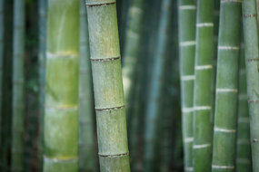
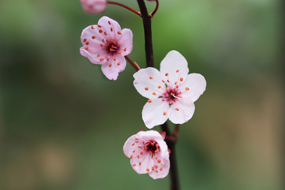

松
要说松树，要比大它比不过榕树，要比美它比不过柳树。但是，秋天，花谢了，草枯了，许多树的叶子都落尽了，松树却在秋风秋雨中舒展它的枝叶。

竹
竹有阳刚之气，又具阴柔之美。三千年华夏国粹，竹君始终是东方人追求的境界，但同时又与东方文化紧密相联。

梅
驿外断桥边，寂寞开无主。已是黄昏独自愁，更着风和雨。无意苦争春，一任群芳妒。零落成泥碾作尘，只有香如故。
要说松树，要比大它比不过榕树，要比美它比不过柳树。但是，秋天，花谢了，草枯了，许多树的叶子都落尽了，松树却在秋风秋雨中舒展它的枝叶。
竹有阳刚之气，又具阴柔之美。三千年华夏国粹，竹君始终是东方人追求的境界，但同时又与东方文化紧密相联。
驿外断桥边，寂寞开无主。已是黄昏独自愁，更着风和雨。无意苦争春，一任群芳妒。零落成泥碾作尘，只有香如故。